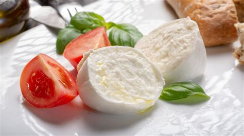

Mozzarella

"Think homemade mozzarella cheese is impossible to make? Think again! This recipe shows you how to make delicious mozzarella cheese from scratch. You can create any shape you desire - try larger balls, small balls, or twists and knots. Store in the refrigerator."
Ingredients
- 3/4 cup cool water, divided
- 1/4 teaspoon liquid rennet
- 1 1/2 teaspoons citric acid
- 1 gallon raw milk
- 1 teaspoon salt (optional)
Steps
- Combine 1/4 cup water and rennet in a small bowl; mix well.
- Combine remaining 1/2 cup water and citric acid in another small bowl; mix until dissolved.
- Pour milk into a large pot set over medium heat. Stir in water-citric acid mixture. Heat milk, stirring occasionally, until it registers 90 degrees F (32 degrees C) on an instant-read thermometer, about 5 minutes.
- Remove milk from heat and stir in rennet mixture in a figure-8 motion for 30 seconds. Stir counterclockwise for 30 seconds to still the milk. Let stand, covered, until milk sets into curd, 5 to 10 minutes. Press edge of the curd gently with a palette knife or the back of a spoon to check for firmness.
- Slice vertically into the pot to cut curd into 3/4-inch cubes with a palette knife. Stir curds gently, but leave cubes mostly intact.
- Return pot to the heat; cook over medium heat, stirring curds gently, until temperature reaches 109 degrees F (43 degrees C), about 5 minutes. Remove from heat.
- Ladle curds into a colander set over a large bowl using a slotted spoon. Press curds gently to extract liquid whey. Pour drained whey back into the pot.
- Heat whey to 185 degrees F (85 degrees C), about 5 minutes. Wearing gloves, tear off a piece of curd and place on a slotted spoon. Dip curd into hot whey for 5 to 10 seconds. Stretch, fold, and knead the curd. Repeat until mozzarella is smooth and elastic. Knead in salt and form curd into a ball. Repeat dipping and kneading process with remaining curd.
- Allow mozzarella to cool. Wrap tightly in plastic wrap and transfer to the refrigerator.
Home